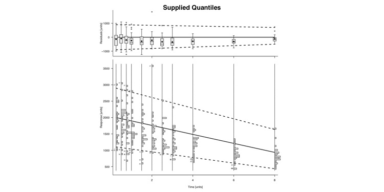

Example - Supplied Quantiles
#pdf(file="F:/Website/slug/supplied-slug-large.pdf", width = 15, height = 7.5)
### Import Data
data.to.plot <- bolus
dose <- 120000
data.to.plot <- data.to.plot[data.to.plot["AMT"]==0 &
data.to.plot["MDV"]==0 & data.to.plot["DOSE"] == dose,]
data.to.plot <- data.to.plot[data.to.plot["TIME"] <= 10,]
sequence <- unique(data.to.plot[,"TIME"])
#print(sequence)
range.start <- range(data.to.plot[data.to.plot$TIME == sequence[1],"DV"])
range.finish <- range(data.to.plot[data.to.plot$TIME == sequence[length(sequence)],"DV"])
m <- c((range.start[2]-range.finish[2])/(sequence[1] - sequence[length(sequence)]))
calculate.y <- function(x0,x1,y0,m,b){
y1 <- -m*(x0-x1) + y0
y1
}
#print(range.start);print(range.finish);print(m)
quantile.data.to.plot <- sapply(
sequence,
function(x,xstart = sequence[1], yrange = range.start, slope = m){
upper <- calculate.y(x0 = xstart, x1 = x, y0 = 0.95*diff(yrange)+yrange[1],m = 0.95*slope)
middle <- calculate.y(x0 = xstart, x1 = x, y0 = 0.50*diff(yrange)+yrange[1],m = 0.8*slope)
lower <- calculate.y(x0 = xstart, x1 = x, y0 = 0.05*diff(yrange)+yrange[1],m = 0.5*slope)
cbind(lower,middle,upper)
}
)
quantile.data.to.plot <- t(quantile.data.to.plot)
colnames(quantile.data.to.plot) <- c("lower","middle","upper")
### End Import### Make Slug Plot
plot.slug(
column.x = "TIME",
column.y = "DV",
outlier.ids = "ID",
data = data.to.plot,
quantile.data = quantile.data.to.plot,
quantile.lines = c("lower","middle","upper"), #Fake, 'fun' lines that I made up
xlab = "Time [units]",
ylab1 = "Response [units]",
ylab2 = "Residuals [units]",
main = "Supplied Quantiles",
) #dev.off()
{kind=link}